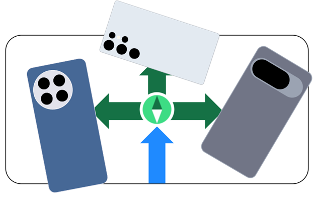

Android Navigator
Choosing a smartphone shouldn't feel like a research project. While millions of users consider switching to Android for better customization and hardware, they’re often overwhelmed by the sheer number of brands and models available in the U.S. That’s why we’re here, to help you effortlessly find a phone that fits you better.
Find Your Fit Browse Phones
Who We Are
Believe it or not, this entire vision started with just one person and a simple realization: phone shopping shouldn’t feel like reading a spreadsheet. While most people either drown in options or just go with the phone everyone else has, our founder was busy dreaming of a way to match people with the feeling of their next device. Today, that original spark has evolved into the site you see here—brought to life by a tiny but mighty team of three. With two incredible partners helping to bridge the gap between "big idea" and "picture-perfect reality," we’ve built a space that cuts through the marketing noise. We aren’t a giant media machine; we’re just people who think you deserve a phone that actually fits your life.
Our Mission
We believe the "upgrade cycle" is broken. For too long, the world has been told to just buy the next iteration of the same phone every single year, regardless of whether it actually adds anything to their life. Our mission is to break that loop. We’re here to prove that you don’t have to settle for the status quo or drown in a sea of identical glass slabs. Whether you’re an "average" user who just wants a reliable companion or a specialist who knows exactly which niche you inhabit, we want to empower you to choose what’s actually best for you. We’ve reached through the fog to bring you a curated look at technology that isn't just about the specs on a box—it's about finding the one device that finally feels right.
Find Your Phone
What are you waiting for? The perfect device is out there waiting for you. Whether you’re ready to dive deep into the technical details or you’re still figuring out which "vibe" matches your daily routine, your next upgrade is only a click away. If you want to see how you align with our curated groups, head over to Find Your Fit to discover your archetype. If you already know what you're looking for and want to see the lineup, select Browse Phones to see the hardware in action.